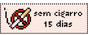

guites' official Lung-o-dar 🫁
This is a very anxious page where I track my life as a non smoker. There are skulls 💀 on days I've had a cigarette, and a sticker 🚭 on the ones I haven't.
You can put your mouse on the recorded days to get a glimpse of how I was feeling that particular moment.
My last day as a smoker was 28/07/2024. Every cigarette from there on can be seen as a misstep =P.
Let's fucking go!
2024
amidst the haze
| July | ||||||
|---|---|---|---|---|---|---|
| Mon | Tue | Wed | Thu | Fri | Sat | Sun |
| 1 | 2 | 3 | 4 | 5 | 6 | 7 |
| 8 | 9 | 10 | 11 | 12 | 13 | 14 |
| 15 | 16 | 17 | 18 | 19 | 20 | 21 |
| 22 | 23 | 24 | 25 | 26 | 27 | 28💀 |
| 29🚭 | 30🚭 | 31🚭 | ||||
| August | ||||||
|---|---|---|---|---|---|---|
| Mon | Tue | Wed | Thu | Fri | Sat | Sun |
| 1🚭 | 2🚭 | 3🚭 | 4🚭 | |||
| 5🚭 | 6🚭 | 7🚭 | 8🚭 | 9🚭 | 10🚭 | 11🚭 |
| 12🚭 | 13🚭 | 14 | 15 | 16 | 17 | 18 |
| 19 | 20 | 21 | 22 | 23 | 24 | 25 |
| 26 | 27 | 28 | 29 | 30 | 31 | |
Streak
Not smoking for 16 consecutive days!
